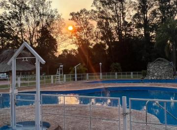
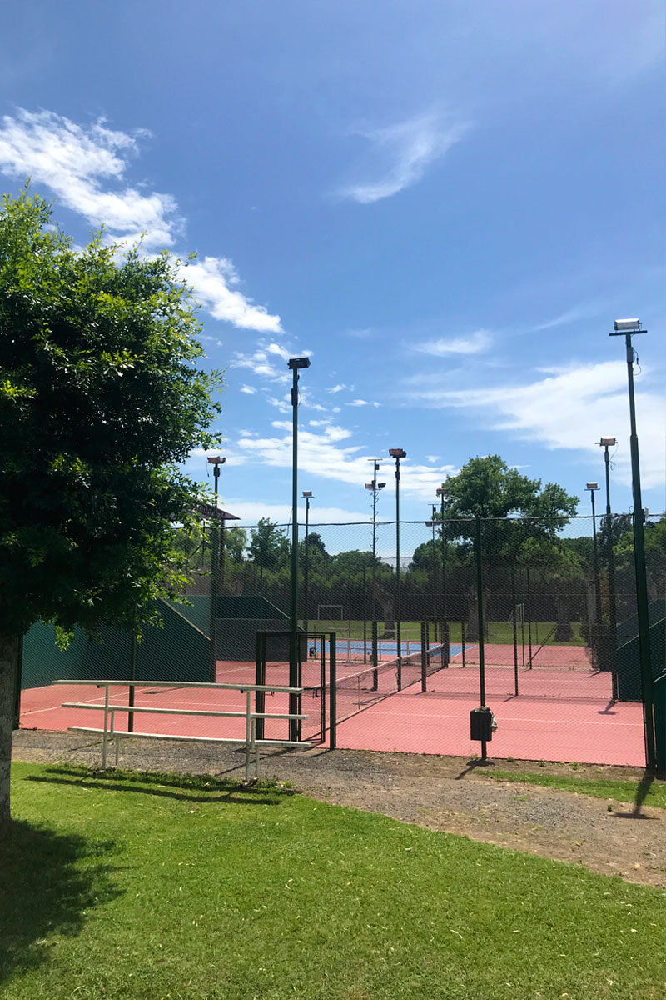
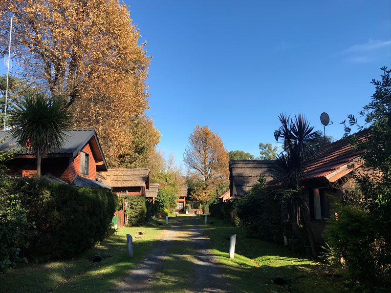

Cabañas dentro del predio
Ideal para familias que buscan tranquilidad, naturaleza y espacios compartidos con uso real: pileta, deportes, plaza, quincho y vida social en una escala humana.
Propuesta
Un desarrollo pensado para disfrutar todos los días.
01
Entorno natural con identidad propia
Arboleda consolidada, circulación interna tranquila y una atmósfera relajada que diferencia al barrio de propuestas más impersonales.
02
Perfil familiar
Un entorno cercano y amable, ideal para chicos, encuentros y tiempo de calidad en familia.
03
Uso de fin de semana y verano
Una propuesta muy atractiva para escapadas, descanso y temporadas de verano.
Servicios
Espacios para el deporte, el descanso y la vida social
Pileta y solárium
Un punto central del barrio para disfrutar jornadas de calor.
Pádel y tenis
Canchas para actividad regular y encuentros entre vecinos.
Fútbol, vóley y básquet
Opciones recreativas para distintas edades y grupos.
SUM, quincho y ping pong
Espacios compartidos para reuniones, comidas y tardes sociales.
Restaurante y proveeduría
Servicios que simplifican la estadía y suman practicidad.
Plaza y juegos infantiles
Áreas abiertas para chicos, descanso y encuentro cotidiano.
Galería
Imágenes reales para conocer el entorno y sus espacios



Posicionamiento
Los atributos que mejor definen a Mi Campo
Un refugio cercano
Una opción ideal para quienes buscan bajar el ritmo sin alejarse demasiado de la ciudad ni resignar comodidad.
Una inversión vivible
La combinación entre uso personal, entorno familiar y alternativas de compra o alquiler le da atractivo tanto para disfrutar como para proyectar una inversión.
Un relato simple y creíble
Naturaleza, seguridad, deporte y vida en comunidad: una síntesis clara que representa bien la esencia del barrio.
Opiniones
Lo que más valoran quienes ya conocen Mi Campo
"Precioso lugar para pasar un fin de semana en buena compañía. Excelente lugar para los niños, con juegos y súper seguro. Distintos sitios para practicar deporte. Mucho espacio verde para disfrutar. Vecinos muy respetuosos. Barrio tranquilo y silencioso."
"Bellísimo lugar de cabañas muy tiernas, para pasar una bella temporada, con mucho parque y canchas diversas. Los chicos están en libertad dentro del lugar cerrado, sin miedo."
"Hermoso lugar, tiene de todo: piletas, canchas y áreas verdes hermosas. Muy seguro para los nenes. Fui como invitado y me encantó."
"El lugar muy limpio y la atención excelente. Ofrece muchos espacios para actividades, pileta muy limpia y mucho lugar para caminar o andar en bici."
"Un lugar que da paz. Es de cuentos."
"Muy lindo lugar, con mucho verde y muy buena la gente. Ideal para pasar el rato y despejarse."
Venta y consultas
Cabañas, lotes, alquileres y opciones de financiación
Country Mi Campo se presenta como una alternativa para vivir, descansar o invertir dentro de un entorno natural y seguro en Loma Verde.
Hay interés en cabañas, lotes y financiación, además de consultas vinculadas a estadías o alquileres puntuales.
Una propuesta versátil para quienes priorizan el disfrute cotidiano, las escapadas de fin de semana o una oportunidad con potencial de valorización.
Ubicación
Old Man 1870, Loma Verde, Escobar
Dirección: Old Man 1870, B1625 Loma Verde, Provincia de Buenos Aires.
Una ubicación práctica dentro de Escobar, con un entorno verde y un acceso que acompaña el estilo de vida tranquilo del barrio.
Contacto